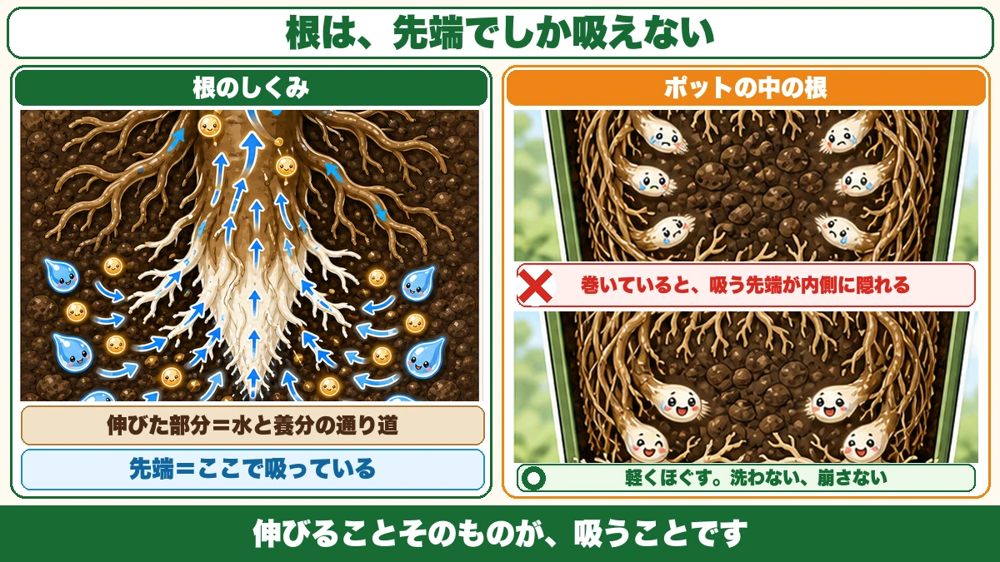
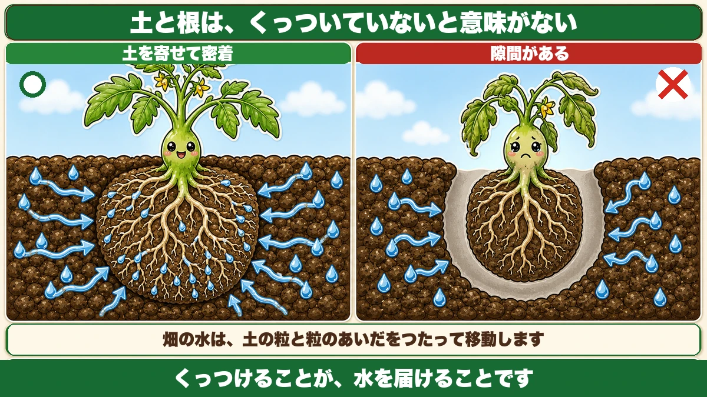
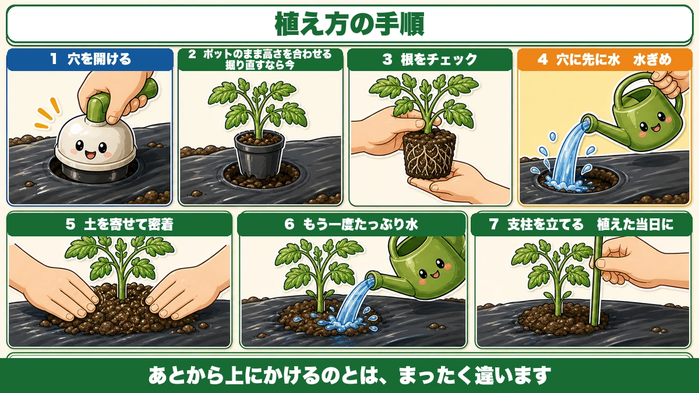
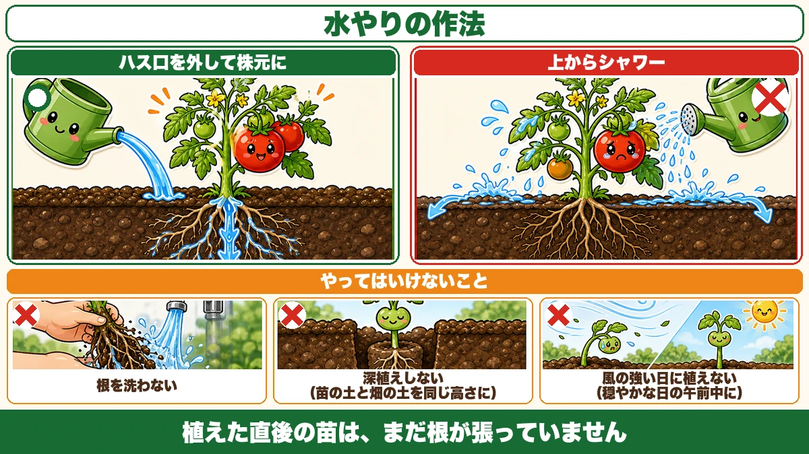

根は先端でしか吸いません🍅 だから植える前に、根をほぐします

🗨️「植えたのに、しばらく止まったままだった」
🗨️「マルチに穴を開けて、水をやって、おしまい」
🗨️「根はほぐすの？ ほぐさないの？」
どうも、8150（えいこう）です🌱 家庭菜園歴8年、理科の教員免許を持っていて、有機・無農薬で野菜を育てています。
前回は「4月に植えるな」という話をしました。今日はその続きで、★では正しく植えるとはどういうことか、です。
先に、この記事でいちばん言いたいことを言っておきます。
★根は、先端でしか吸っていません。
だから植える前に、根の先端がどこにあるかを見ます。ここが分かると、なぜ根をほぐすのか、なぜ土を寄せるのかが、全部つながります☺️
📖 この記事の目次
活着（かっちゃく）という言葉
植えた日から、勝負が始まっている
活着というのは、★植えた苗が新しい根を出して、その土に根づくことです。
苗を植えても、すぐに大きくなりはじめるわけではありません。しばらく止まっているように見える時期があります。あれは、新しい根を出そうとしている時間です。
そして★活着が遅いと、その後の成長がまるごと遅れます。
- 根づくのが1週間遅れる
- そのぶん葉が増えるのが遅れる
- そのぶん花が咲くのが遅れる
- ★収穫が遅れて、量も減る
★最初の1週間の遅れが、夏まで引きずられます。
「穴を開けて、水をやって、おしまい」でも育つ
正直に書きますが、雑に植えても、春から夏なら苗は活着します。気温が上がっていくので、なんとかなるんです。
私も最初の3年くらいは、そうやっていました。
でも★「活着するかどうか」と「活着が速いかどうか」は別の話です。ここに手を入れるかどうかで、結果がはっきり変わります。
★根は、先端でしか吸えない
伸びた部分は、通り道
これが今日いちばんお伝えしたいことです。
★すでに伸びて茶色くなった根からは、養分を吸収できません。
吸収しているのは、★先端の白い部分です。これから伸びようとしている、いちばん新しいところ。

伸びた部分は何をしているかというと、★水と養分を上へ運ぶ通り道になっています。水道管のようなものですね。
だから根は、常に先へ先へ伸びていきます。★伸びることそのものが、吸うことなんです。
★根が巻いていると、先端が隠れる
ここで問題が起きます。
ポットの中で長く育った苗は、★根が壁に沿ってぐるぐる巻いています。根詰まりと言います。
このとき、根の先端はどこにあるでしょうか。
★内側です。ぐるぐる回った先っぽが、根鉢の内側に閉じこめられています。
このまま植えると、どうなるか。先端が外の土に触れていないので、★新しい土から吸いはじめるまでに時間がかかります。これが活着の遅れです。
だから、軽くほぐす
対策は簡単です。
★巻きすぎているようなら、底のあたりを軽くほぐしてから植えます。
「軽く」がポイントです。★洗ったり、土を落としきったりしないでください。細い根は触るだけで切れます。
底の巻いている部分を指でほどいて、外へ向けてやる。それだけで十分です。
★巻いていない苗は、そのまま植えて構いません。無理にほぐす必要はありません。
★土と根は、密着していないと意味がない
隙間があると、根は進めない
もうひとつ大事なことがあります。
★苗の土と、畑の土のあいだに隙間があると、根は伸びていけません。
根が進むには、そこに土がなければなりません。空気の層があると、そこで止まります。そして水も伝わりません。

水は、土を伝って届く
畑の水は、土の粒と粒のあいだをつたって移動します。
土と根が触れていれば、水は根に届きます。★離れていると、いくら水をやっても根までは届きません。
タネまきのときに「鎮圧する」と何度かお伝えしました。あれと同じ理屈です。★くっつけることが、水を届けることです。
だから、まわりの土を寄せる
植えたあと、★まわりの土を手で寄せて、苗の土に密着させてください。
ぎゅうぎゅう押し固める必要はありません。★隙間がなくなればいい。手で軽く押さえるくらいで十分です。
★根は、酸を出して養分を溶かしている
土の中のミネラルは、そのままでは吸えない
もう少しだけ理科の話をします。
土の中には、カルシウムや鉄などのミネラルが含まれています。でも★かたまりのままでは、根は吸えません。
どうしているかというと、★根が酸を出して、まわりのミネラルを溶かしています。溶けて水に混ざったものを、先端から吸い上げる。
植物は、自分で自分の食事を用意しているわけです。
植えたばかりの苗は、それができない
ところが、植えたばかりの苗は弱っています。
- 光合成がまだ本調子ではない
- ★酸を出す力も十分ではない
だから最初の数日は、食事の準備がうまくできない状態です。
そこで、★薄めた酸（食酢をうすめたものなど）を水に混ぜて与えると、活着が早まるという考え方があります。苗が自分でやることを、少し手伝ってやるイメージですね。
★必須ではありません。やらなくても活着します。ただ、理屈は通っています。試してみたい方は、ごく薄くしてください。濃いと逆に根を傷めます。
植え方の手順、7つ

①マルチに穴を開ける
マルチカッターを、★強めに叩き込んでください。中途半端だと切り口がぎざぎざになって、あとで風にあおられて破れます。
②★ポットのまま、穴に置いて高さを合わせる
ここを飛ばす方が多いです。
★苗をポットに入れたまま、開けた穴に置いてみてください。
深すぎる、浅すぎるが、この時点で分かります。掘り直すなら今です。苗を出してから「合わない」と気づくと、根を出したまま作業することになります。
③根の巻き具合をチェックする
ポットを外します。★底を持って、そっと押し出すように。
巻いていたら、軽くほぐします。巻いていなければ、そのまま。
④★穴に、先に水をたっぷり注ぐ
ここが分かれ目です。
★苗を植える前に、穴のほうへ水を注いでください。
あとから上にかけるのとは、まったく違います。上からかけた水は表面を流れていきますが、★先に注いだ水は、根が入る場所にたまります。
これを水ぎめと言います。★根が最初に触れる場所を、あらかじめ湿らせておく作業です。
⑤苗を置いて、まわりから土を寄せる
水が引いたら、苗を置きます。
★まわりから土を寄せて、密着させてください。さきほどの話のとおりです。
⑥★もう一度、たっぷり水をやる
仕上げにもう一度。ここでコツがあります。
★ジョウロのハス口（シャワーの先）を外して、株元に直接注いでください。
シャワーで上からかけると、水が葉に当たって流れ落ちるだけで、★根まで届く量が減ります。ハス口を外して、株元にゆっくり。
⑦支柱を立てる
最後に支柱です。
★植えた当日に立ててください。あとからにすると、根が広がったところに支柱を突き刺すことになります。
支柱と誘引の話は長くなるので、次回くわしくお話しします。

やってはいけないこと
根を洗わない
古い土を落としてきれいにしよう、と考えないでください。
★この時期の細い根は、触るだけで切れます。根鉢は、崩さずにそのまま植えるのが基本です。
ほぐすのは、巻きすぎている部分だけ。
深植えしない
苗の土の表面と、畑の土の表面が★同じ高さになるように植えてください。
深く埋めると、茎が土に埋まって、そこから腐ることがあります。★浅すぎると、根鉢が乾きます。同じ高さ、が答えです。
風の強い日に植えない
植えた直後の苗は、まだ根が張っていません。★風で揺すられると、根と土のあいだに隙間ができます。
せっかく密着させたのに、台無しになります。★穏やかな日の、できれば午前中に植えてください。
午前中がいい理由は、★その日の日中を使って落ち着けるからです。夕方に植えると、そのまま夜の冷え込みを迎えます。
植えた日から1週間
この記事の要点
- ★活着＝植えた苗が新しい根を出して土に根づくこと
- ★活着が遅いと、その後の成長がまるごと遅れて収穫量に響く
- ★根は先端でしか吸えない。伸びた部分は水の通り道
- ★根が巻いていると、吸う先端が内側に隠れて活着が遅れる
- ★巻きすぎていたら軽くほぐす。ただし洗わない、崩さない
- ★土と根が密着していないと、根も進めず水も届かない
- ★根は酸を出して土のミネラルを溶かしている
- 植えたばかりの苗はその力が弱いので、★薄めた酸を足すと活着が早まる（必須ではない）
- 手順は★①穴を開ける ②ポットのまま高さを合わせる ③根をチェック ④★穴に先に水 ⑤土を寄せて密着 ⑥★ハス口を外して株元に水 ⑦支柱
- ★水ぎめ＝根が最初に触れる場所を先に湿らせておく作業
- ★深植えしない。苗の土と畑の土を同じ高さに
- ★風の強い日に植えない。穏やかな日の午前中に
全部やろうとしなくて大丈夫です。まずは④だけ、覚えて帰ってください。★苗を置く前に、穴へ水を注ぐ。これひとつで、活着の速さが変わります🍅
次回は、支柱と誘引の話。立て方ひとつで、夏の台風に耐えられるかが決まります🌿
ここまで読んでくださって、ありがとうございました。
移植ごて（ステンレス）
根鉢と同じ深さの穴を掘るだけの道具ですが、ステンレスだと土離れがよく、根を崩さずに済みます。


じょうろ（ハス口）
植え穴に先に水を注ぐときに使います。勢いよく出ると穴の壁が崩れるので、ハス口でやさしく。

有機野菜培養土
植え穴に少し混ぜておくと、活着までのつなぎになります。プランターならこれだけで足ります。

敷きわら
植えた日に株元へ。土の乾きと、雨の泥はねを同時に防ぎます。
![[商品価格に関しましては、リンクが作成された時点と現時点で情報が変更されている場合がございます。]](https://hbb.afl.rakuten.co.jp/hgb/56bc2fb2.ff40a6e6.56bc2fb3.618f6a70/?me_id=1257026&item_id=10000211&pc=https%3A%2F%2Fthumbnail.image.rakuten.co.jp%2F%400_mall%2Fsharuka%2Fcabinet%2F09042254%2Fimgrc0081094692.jpg%3F_ex%3D240x240&s=240x240&t=picttext "[商品価格に関しましては、リンクが作成された時点と現時点で情報が変更されている場合がございます。]")
あわせて読みたい